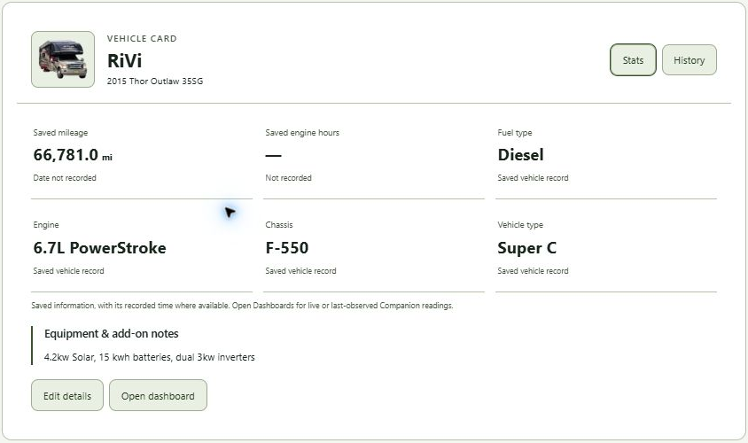

Find the first real opportunity.
We help identify where AI could create value, where it may introduce risk, and which opportunities are worth pursuing first.
Hybrid AI implementation studio
Cognitive Workstead is a hybrid AI implementation studio helping organizations move from AI curiosity to working systems.
We assess opportunities, design workflows, build practical pilots, and help teams implement AI responsibly across real operations - with clear human oversight, useful automation, and measurable value from the start.
RIG · RV INTELLIGENCE GUIDE
RIG is Cognitive Workstead’s vehicle workspace. Keep your Garage, records, checklists and saved places together with COL-B “Colby,” the AI assistant inside RIG.
More road. Less guesswork.

The problem
Most organizations know AI could help, but the real challenge is deciding where it belongs, how to use it safely, and how to turn interest into working capability.
Cognitive Workstead helps turn those questions into a practical path forward - one that connects strategy, workflow design, implementation, governance, and measurable results.
What we do
We help identify where AI could create value, where it may introduce risk, and which opportunities are worth pursuing first.
We map workflows, users, decisions, data, handoffs, review points, and operating rhythms so AI fits into real work instead of sitting beside it.
We create practical pilots, prototypes, assistants, automations, reports, knowledge tools, and decision-support systems that can be tested by real users.
We define human oversight, approval points, audit trails, security boundaries, and responsible-use controls so AI stays useful, observable, and accountable.
We help teams evaluate results, learn from usage, refine workflows, and expand only where the system is producing measurable value.
Colby Systems
Cognitive Workstead is developing a family of Colby-powered advisory systems that help people and organizations organize information, explore options, prepare decisions, and move from rough ideas to practical next steps.
Structured support for system design and planning.
Calm preparation support for retirement planning conversations.
Decision preparation for leaders and operators.
Field notes, reports, and operational documentation.
Structured analysis for complex questions.
Operational awareness for internal systems.
Applied Work
Cognitive Workstead develops and tests practical AI systems through applied work: public demonstrations, internal pilots, implementation patterns, and real-world operating experiments.
A guided path to identify useful first projects.
Applied reporting patterns for field work.
Structured analysis and mission work.
Governed software delivery workflows.
Daily operations as a practical proving ground.
How to start
Use the guided assessment to identify practical AI opportunities, readiness signals, risks, and possible first projects.
Reach out with a business problem, workflow, idea, or implementation question.